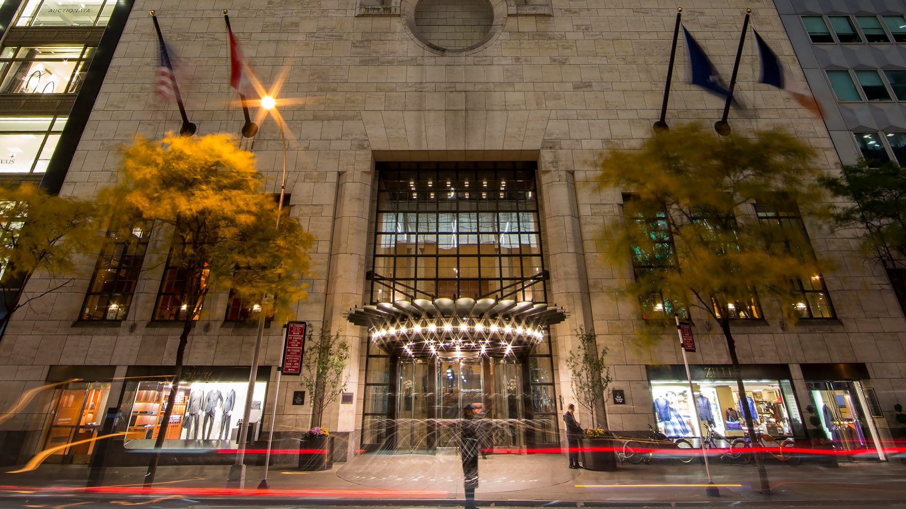
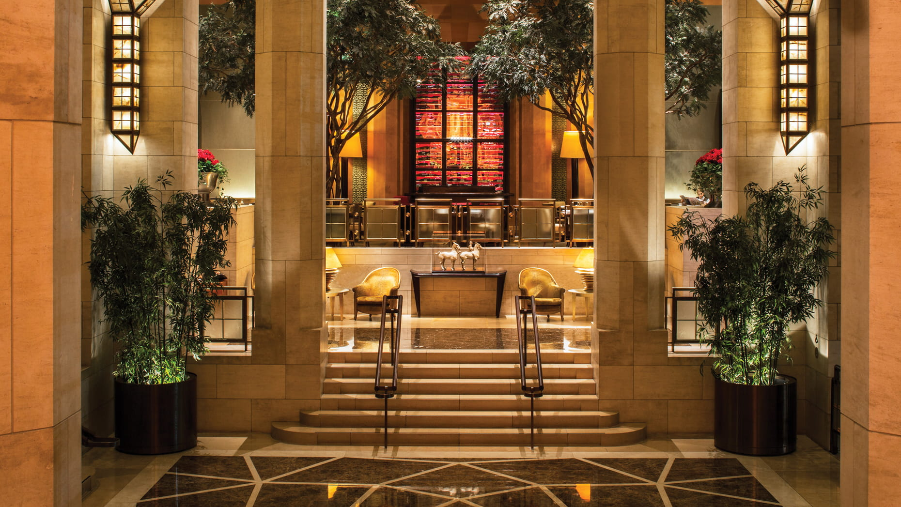
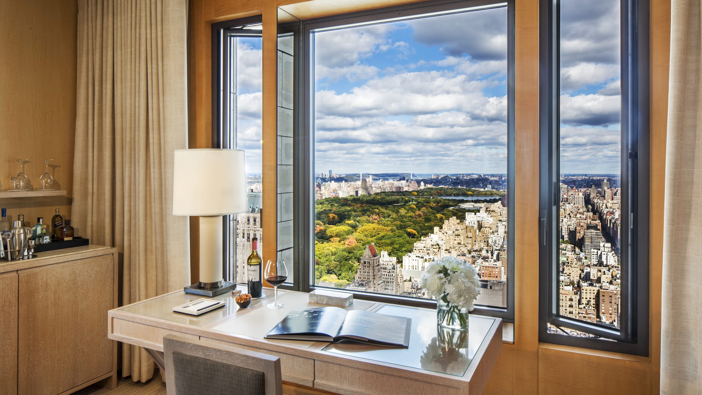
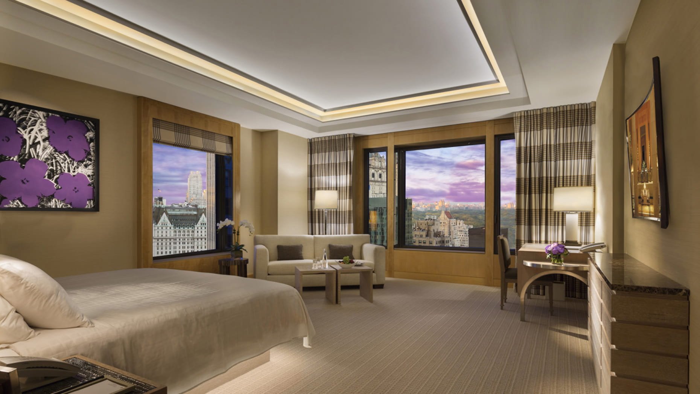

Favorite Hotels
Four Seasons Hotel New York is for clients who want old-school Manhattan luxury done really well.
Four Seasons New York has that big, classic Manhattan hotel feeling that some clients still really want. It is elegant, formal in the right way, and for the right traveler it feels timeless instead of outdated. If someone wants Midtown, strong service, and a more traditional luxury setup, this hotel makes a lot of sense.
What makes it unique
This is one of the last New York hotels that still delivers true grand-hotel Manhattan energy.
Four Seasons is not trying to feel trendy or downtown. It is for clients who want scale, gravitas, large suites, and that unmistakable old-school Manhattan luxury mood. When someone wants the hotel to feel formal, expensive, and deeply established, this still sits in a category of its own.
Best For
Classic Midtown luxury
Perfect for travelers who want the hotel to feel formal, established, and unmistakably expensive.
Known For
Suite depth and gravitas
The room mix is already generous, and the upper suite program is where the hotel really opens up.
Stay
219 accommodations
A suite-heavy setup that works well for families, longer stays, and clients who need more space.
Client Type
Formal, classic travelers
Strong for clients who prefer timeless luxury over a trendier scene-driven hotel atmosphere.



The overall setup
Officially, the hotel has 219 accommodations: 17 studios, 138 junior suites, 59 suites, and 5 specialty suites. That already tells you a lot. This is a hotel that leans heavily into larger accommodations, not just standard rooms.
Room sizes and suite types
A lot of the junior suites are around 500 square feet, which is a strong starting point in New York. Then the suite program goes up fast.
- Jr. Suite City View and Central Park View: about 500 square feet
- Central Park Suite and Central Park Suite with Terrace: about 700 square feet
- Manhattan Suite: about 1,100 square feet
- Manhattan Two-Bedroom Suite: about 1,500 square feet
- Royal Suite: about 2,150 square feet
- Presidential Suite: about 2,150 square feet
- Ty Warner Penthouse: about 4,300 square feet

Restaurants and bars
Dining is a real part of the experience here. The Garden is the classic one, with that dramatic lobby setting under the trees and a more elegant breakfast, lunch, or brunch feel. TY Bar is the better move when the client wants cocktails and a stronger social setting. It feels stylish but still grown-up, which is the right tone for this hotel.
Who it is best for
- Clients who want old-school luxury instead of a scene hotel
- Families or longer stays that benefit from the larger suite-heavy setup
- Travelers who like Midtown and want Central Park nearby
- People who appreciate formality, quiet, and very established service
My honest take
This is a very good fit for clients who want New York to feel important, classic, and extremely well handled. Some people will want something trendier. But if someone wants a serious luxury hotel with scale and presence, Four Seasons still has a place.